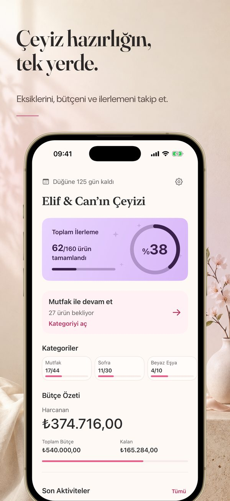
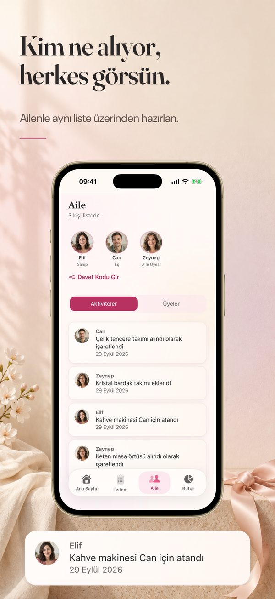
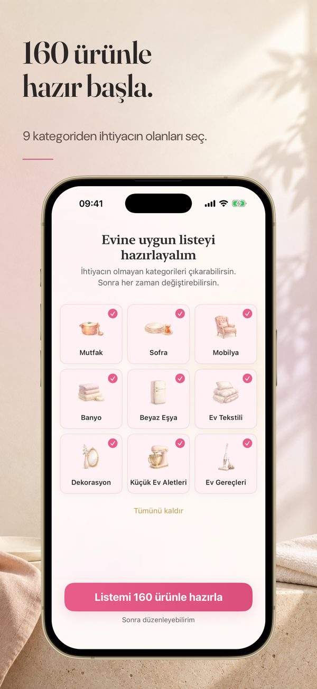
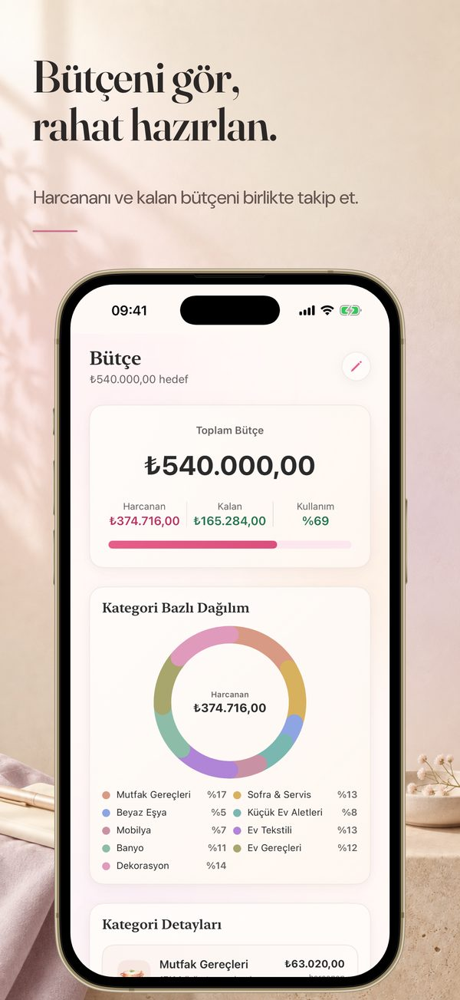
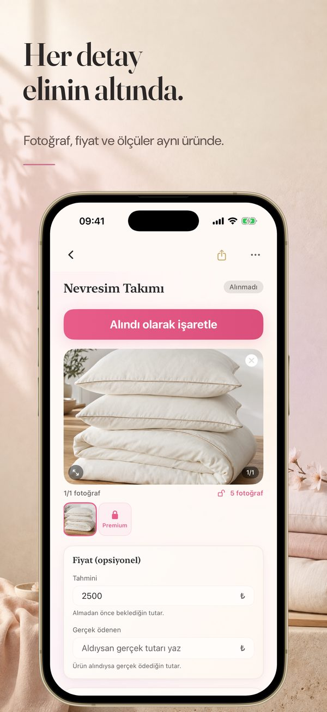
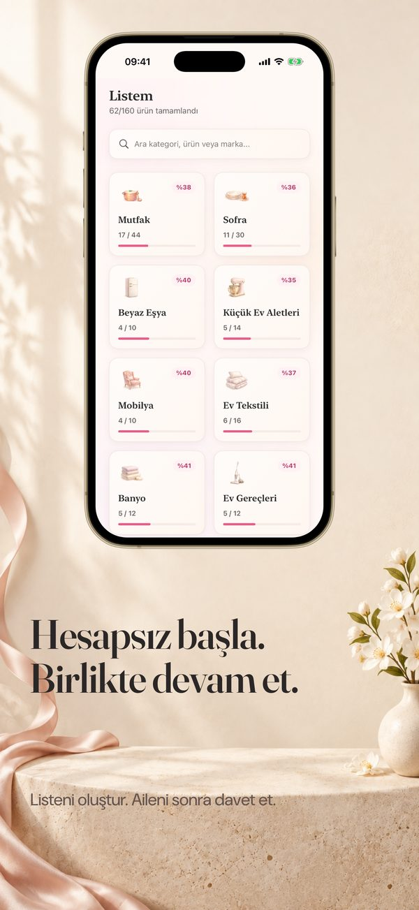

Aile birlikte
çeyiz hazırlar.
Çeyizim: Çeyiz Listesi, aileyle ortak çeyiz listesi uygulamasıdır. 160 hazır ürünle başla, kim neyi alacak belli olsun, bütçeni kategori kategori izle. Çeyiz hazırlığı WhatsApp gruplarında dağılmasın.
- Reklamsız
- KVKK aydınlatma metni
- 9 dilde
- Verin senin

Liste değil, koordinasyon
Çeyiz hazırlığında asıl soru “ne alacağım” değil; kim ne aldı, ne kaldı, sıra kimde. Çeyizim ailenin tamamının aynı listeyi gördüğü tek yer.
Aile rolleri ve paylaşım
Sahip, eş, aile üyesi ya da misafir. 6 haneli davet kodunu WhatsApp'tan paylaş; karşı taraf “Davet Kodu Gir” ekranından listene katılır. Ücretsiz planda listeyi sen dahil toplam 2 kişi kullanır; Premium ile sınır kalkar.
Kim ne aldı, tek bakışta
“Ben aldım” işareti, “annem alacak” ataması ve canlı aktivite akışı. Mağazada beğendiğin ürünün fotoğrafını çek, listeye ekle.
Bütçeni gör, rahat hazırlan
Toplam bütçeyi, harcananı ve kalanı kategori kategori takip et. 9 kategori ve 160 hazır ürünle dakikalar içinde başla.
Hesapsız başla
İlk ürünü işaretle, değeri hisset, sonra hesap aç. Yedekleme veya aile paylaşımı istediğinde Apple ya da Google ile giriş yap.
Ekran görüntüleri





Üç adımda ortak çeyiz listesi
- Hazır listeyi seç. 160 ürün önerisi arasından evine uygun kategorileri seç, gereksizleri çıkar.
- Aileni davet et. 6 haneli kodu eşine ve ailene gönder; herkes aynı listeyi görsün.
- Kim ne alacak, belirle. Ürünleri kişilere ata, alındıkça işaretle, bütçeyi takip et.
Çeyizde neler olmalı? 9 kategoride 160 ürün
Çeyizim'deki öneriler aşağıdaki ürünlerden oluşur; seçtiğin kategorilerin ürünleri listene gelir. Kendi evine göre çıkarıp ekleyebilirsin.
Mutfak Gereçleri · 44 ürün
Çelik Tencere Takımı, Granit Tencere Takımı, Döküm Tencere Takımı, Düdüklü Tencere, Sos Tenceresi, Sahan Seti, Tava, Grill Tava, Krep Tava, Gözleme Tavası, Borcam Seti, Bıçak Seti, Kesme Tahtası, Rende, Soyacak, Süzgeç Seti, El Rondosu, Hamur Kesme Aleti, Sarımsak Ezici, Limon Sıkacağı, Salata Kurutucu, Oklava, Cam Saklama Kapları, Plastik Saklama Kapları, Çelik Saklama & Karıştırma Kabı, Erzak Kavanozları, Baharat Seti, Un / Çay / Şeker Kabı, Buzdolabı Erzak Kapları, Patates Soğan Sepeti, Çaydanlık, Cezve Seti, Ölçü Kabı & Sütlük, Huni, Nihale, Kek Kalıbı, Kek Fanusu, Ekmek Kutusu, Ekmek Sepeti, Mutfak Sabunluk Seti, Bulaşıklık, Çekmece İçi Kaşıklık, Mutfak Çöpü, Mutfak Temizlik Bezi
Sofra & Servis · 30 ürün
Misafir Yemek Takımı, Günlük Yemek Takımı, Çatal Kaşık Bıçak Takımı, Çay Bardağı & Tabakları, Su Bardağı Seti, Meşrubat Bardağı Seti, Türk Kahve Fincanı Takımı, Kadeh Seti, Kupa Seti, Servis Tepsisi, Servis Suplası, Sürahi, Termos, Yağdanlık Seti, Tuzluk & Biberlik, Şekerlik, Peçetelik, Rulo Peçete Takacağı, Salata Kasesi, Sufle Kaseleri, Tatlı Kaseleri, Kuruyemiş Kaseleri, Kahvaltılık Kaplar, Kahvaltı Seti, Tereyağlık / Ballık, Silikon Pişirme Gereçleri, Bambu Pişirme Gereçleri, Çelik Servis Takımı, Kurabiye Sunum Tabağı, Bal Kavanozu
Beyaz Eşya · 10 ürün
Buzdolabı, Çamaşır Makinesi, Bulaşık Makinesi, Kurutma Makinesi, Fırın, Ocak, Davlumbaz, Klima, Televizyon, Derin Dondurucu
Küçük Ev Aletleri · 14 ürün
Robot Süpürge, Dikey Süpürge, Buharlı Temizlik Makinesi, Ütü, Saç Kurutma Makinesi, Çay Makinesi, Türk Kahvesi Makinesi, Kettle, Airfryer, Tost Makinesi, Katı Meyve Sıkacağı, Rondo & Mikser & Blender, Mutfak Robotu, Mikrodalga
Mobilya · 10 ürün
Salon Koltuk Takımı, Yemek Odası Takımı, Yatak Odası Takımı, TV Ünitesi, Oturma Odası Takımı, Zigon & Orta Sehpa, Mutfak Masası & Sandalyeleri, Ayakkabılık, Banyo Dolabı, Portmanto / Askılık
Ev Tekstili · 16 ürün
Nevresim Takımı, Yatak Örtüsü Takımı, Pike Takımı, Yorgan, Yastık Seti, Alez, Battaniye, Perde Takımı, Masa Örtüsü, Runner, Fırın Tutacağı & Eldiveni, Hurç Seti, Yorgan Hurcu, Terlik Seti, Seyahat Yastığı, Valiz İçi Düzenleyici
Banyo · 12 ürün
Bornoz Takımı, El & Yüz Havlusu Seti, Banyo Havlusu Seti, Ayak Havlusu, Banyo Paspas Takımı, Çamaşır Sepeti, Banyo Seti (Sabunluk & Diş Fırçalık), Tuvalet Fırçası & Çöp Kovası, Banyo Gereçleri Sepet Takımı, Deterjan Rafı, Makyaj Organizer, Kaydırmaz Banyo Paspası
Ev Gereçleri · 12 ürün
Ütü Masası, Çamaşırlık, Çamaşır Leğeni, Süpürge & Faraş, Temizlik Kovası, Kıyafet Askıları, Dolap İçi Kaydırmaz Rulo, Halı / Kilim, Paspas (Kapı Önü), Valiz Seti, İlk Yardım Çantası, Alet Çantası
Dekorasyon · 12 ürün
Vazo, Şamdan, Mum, Çerçeve Seti, Tablo / Duvar Süsü, Ayna, Lamba / Abajur, Avize / Aydınlatma, Yapay Çiçek, Dekoratif Obje, Duvar Saati, Kırlent Seti
Çeyiz listesi ve Çeyizim hakkında
Çeyiz listesi nasıl hazırlanır?
Önce evin ihtiyaçlarını kategorilere ayır: mutfak gereçleri, sofra ve servis, beyaz eşya, küçük ev aletleri, mobilya, ev tekstili, banyo, ev gereçleri ve dekorasyon. Sonra ihtiyacın olmayanları çıkar, zaten sahip olduklarını işaretle ve her ürün için kimin alacağına karar ver. Çeyizim bu 9 kategoride 160 ürün önerisiyle başlar; listeyi kendi evine göre düzenlersin.
Çeyiz listesini aileyle nasıl ortak tutarım?
Çeyizim'de listeni oluşturduktan sonra 6 haneli davet kodunu eşine veya ailene gönderirsin; onlar uygulamada “Davet Kodu Gir” ekranından aynı listeye katılır. Roller sahip, eş, aile üyesi ve misafirdir. Değişiklikler herkesin telefonunda görünür.
Çeyizde kim neyi alacak, nasıl takip edilir?
Her ürünü bir kişiye atayabilirsin; örneğin tencere takımı annene, beyaz eşya eşine. Ürünün durumu “alınmadı”, “sipariş verildi” ya da “alındı” olarak işaretlenir ve aile ekranındaki aktivite akışında kimin neyi aldığı görünür. Bu, aynı ürünün iki kez alınmasını önlemeye yardımcı olur.
Çeyiz bütçesi nasıl takip edilir?
Toplam bütçeni belirlersin; her ürüne isteğe bağlı olarak tahmini ve ödenen fiyat girersin. Çeyizim harcananı, kalanı ve kategori bazında dağılımı gösterir. Fiyat girmek zorunlu değildir.
Çeyizim ücretsiz mi?
Hazır liste, aile daveti, fiyat ve bütçe takibi ücretsizdir. Ücretsiz planda 9 ürünü “alındı” olarak işaretleyebilirsin; listeyi ilk kurarken “zaten aldım” dediğin ürünler bu sayıya dahil değildir. Ücretsiz planda listeyi sen dahil toplam 2 kişi kullanabilir. Premium (aylık, yıllık veya ömür boyu) ile bu sınırlar kalkar; güncel fiyat mağazada gösterilir. Uygulamada reklam yoktur.
Çeyizim Android'de var mı?
Evet. Çeyizim: Çeyiz Listesi hem iPhone (App Store) hem Android (Google Play) için yayında.
Hesap açmak gerekiyor mu?
Hayır. Hesap açmadan listeni oluşturup kullanabilirsin. Yedekleme veya aile paylaşımı istediğinde Apple ya da Google ile giriş yaparsın.
Çeyizim, aynı adı taşıyan diğer uygulama ve sitelerle aynı mı?
Hayır. Bu sayfa, Osman Seven tarafından geliştirilen “Çeyizim: Çeyiz Listesi” uygulamasınındır (App Store kimliği 6762088174, Google Play paket adı com.osmanseven.ceyizim). Benzer adlı başka uygulama veya web siteleriyle bağlantısı yoktur.
Çeyizin yerli yerinde.
Ücretsiz indir, aileni davet et.